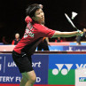
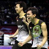
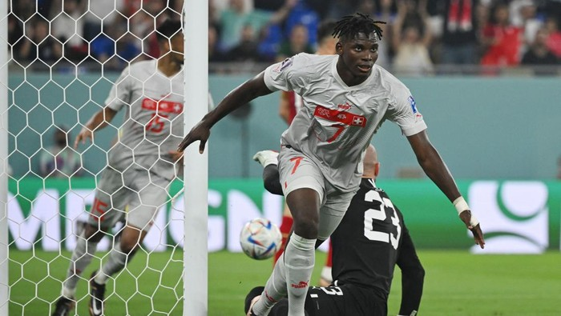
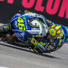
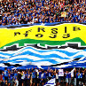

Liliyana Natsir
Kekompakan liliyana natsir dan tantowi ahmad dalam setiap pertandingan.

Hendra dan Aksan
Hendra dan Aksan akan terus meningkatkan prestasi di kancah internasional.
Berita Terkini
Swiss Kembali Memimpin, Serbia & Kamerun Terdesak

Laga Serbia vs Swiss di Stadium 974, Sabtu (3/12/2022) dini hari WIB berjalan alot. Swiss unggul duluan lewat Xherdan Shaqiri, tapi kemudian dibalas Serbia melalui Aleksandar Mitrovic dan Dusan Vlahovic.
Breel Embolo menyamakan lagi skor jelang turun minum, membuat kedudukan 2-2 di babak pertama. Hasil itu membuat Swiss tertahan dengan empat poin di posisi dua.
Tapi kemudian Swiss mencetak gol cepat pada babak kedua lewat Breel Embolo. Ini memperkuat posisi mereka di klasemen, karena sementara mengumpulkan enam poin. Sementara Kamerun dan Serbia yang butuh kemenangan pun makin terdesak. Kamerun sementara mengumpulkan dua poin karena masih berimbang 0-0 kontra Brasil, dalam pertandingan di Lusail Iconic Stadium.
Serbia yang tertinggal saat ini masih berkutat dengan satu poin di dasar klasemen. Baik laga Serbia vs Swiss maupun Kamerun vs Brasil masih berlangsung saat ini. Brasil menjadi satu-satunya tim yang sudah dipastikan lolos memasuki Matchday 3 di grup ini.
Populer

Valentino Rossi mengaku kecepatan motornya terus membaik dan mulai beradaptasi dengan mesin baru.Rio Haryanto berusaha semaksimal mungkin pada balapan pertama dan dia selalu berdoa agar balapan lancar.

Persib bandung merayakan ulang tahun yang ke 83, semua pemain berharap kedepanya persib akan sukses.